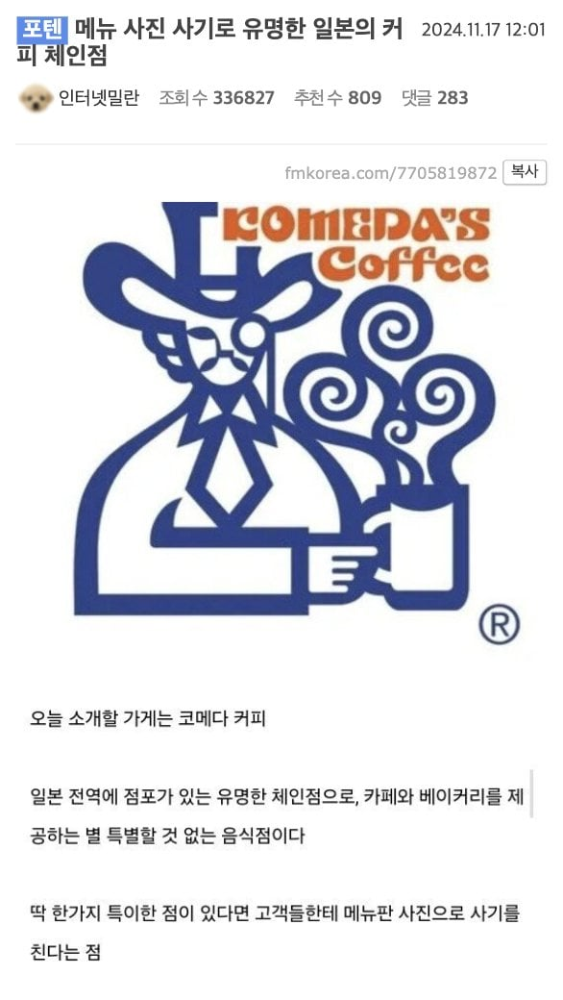
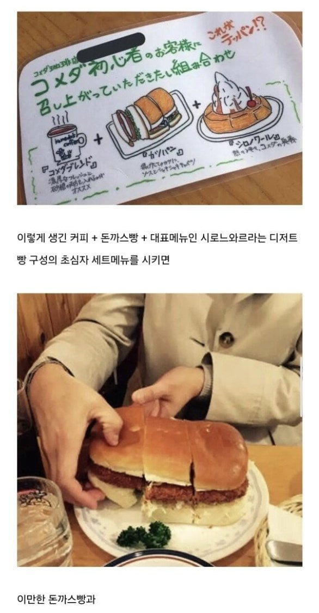
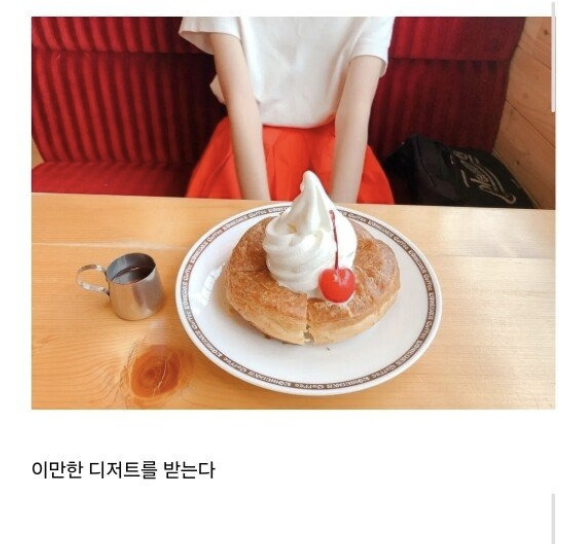
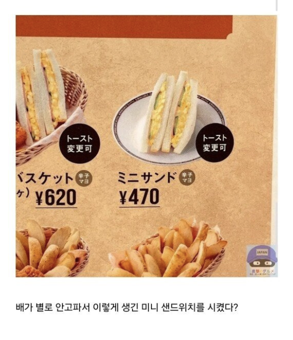
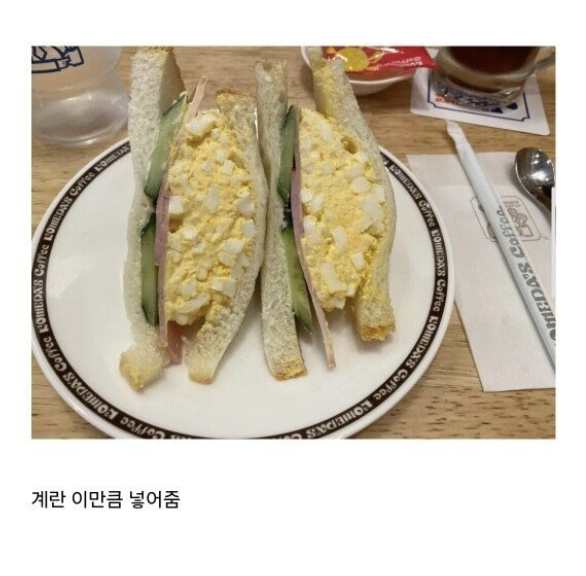
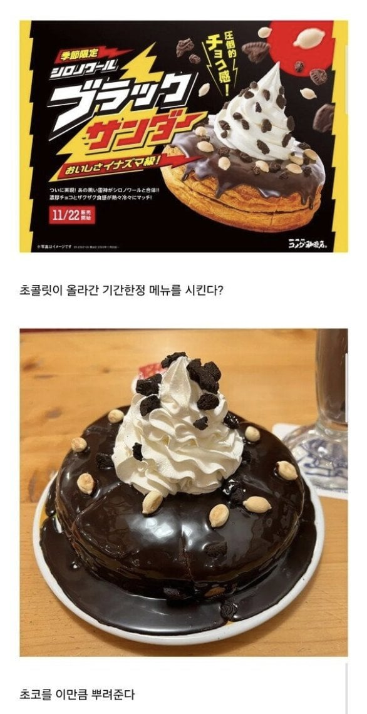
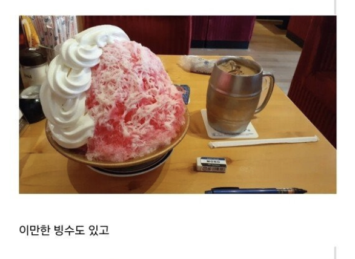
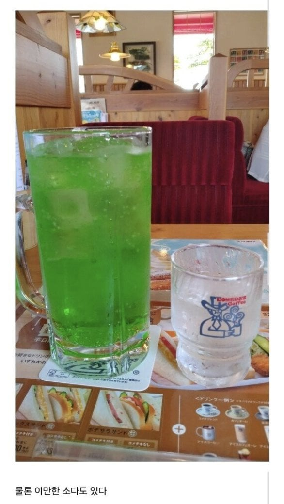
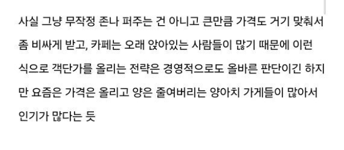
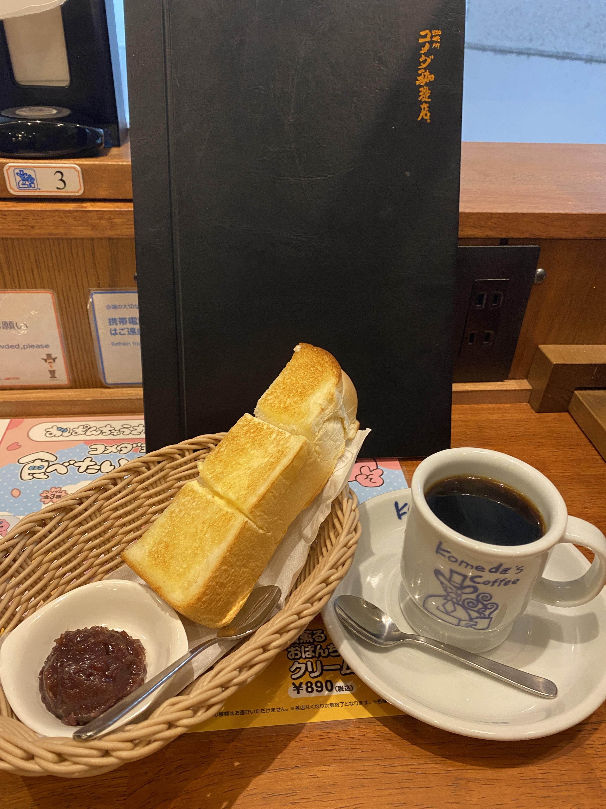

참고로 이 코메다 커피라는 프랜챠이즈는 나고야에서 생긴 프랜차이즈
그래서 위 사진에 있는 나고야 명물인 미소 카츠(된장 돈까스) 샌드위치도 팔고 있음.

나고야가 토요타로 유명한 도시인데, 공장 노동자들이 아침에 출근하면서 카페가서 아침을 먹는 조식 문화가 있어서, 코메다 커피는 조식이 유명함.
아침 11시 이전까지 가면 600엔에 커피와 토스트 or 모닝빵을 줌.
곁들임으로 팥앙금도 같이 먹을 수 있는데, 오구라 토스트라는 나고야 명물임.
아침 7시부터 여는 경우가 많아서, 조식이 없는 호텔에 묵는 여행자들도 많이 가는 곳이고
인터넷이 존나 빨라서, 일본 직장인이나, 프리랜서들이 애용하는 곳이기도 함.

코메다 커피 한국 들어오라구우웃